Migration between
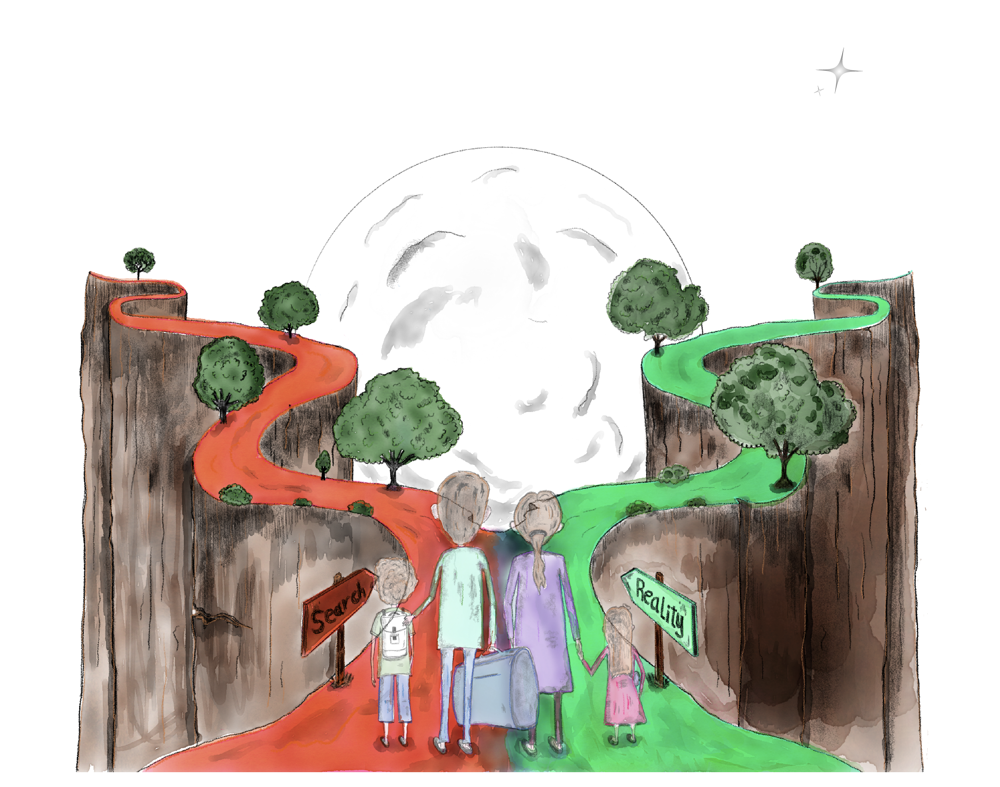
A visual exploration of the gap between the reality of the world's migrants and search interest.
By a believer in the human right to live and move freely Mohamad Waked using Google Trends
Monday, August 16, 2021 was an otherwise quiet workday for me. It was also a day when the United States was completing its withdrawal from Afghanistan. At a time when I was enjoying peace and comfort, there was clamor and chaos in another part of the world.
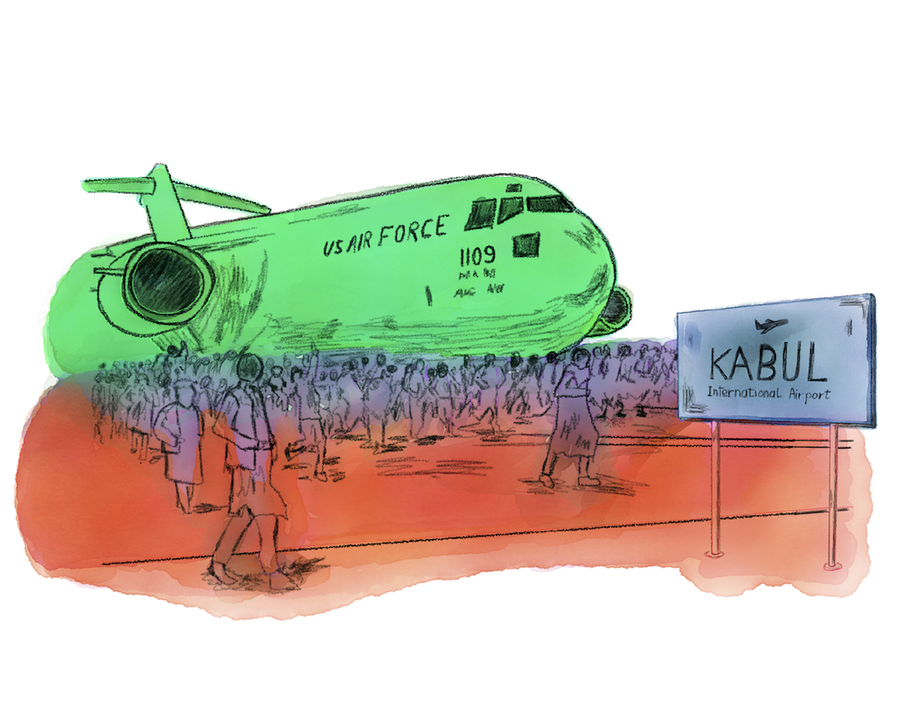
Some Afghans were able to leave their country, ravaged by war
over four decades, and move to the land of dreams.
They rushed to Kabul Airport, hoping to be among the lucky ones. Perhaps if I had gone through what they went through during these miserable years, I might
be among those rushing to get that golden ticket.
Afghanistan is a country of 40 million people and one in every seven of them have left the country and migrated abroad. In 2020, it became the eleventh
country in the world in terms of the number of migrants, approaching 6 million people, according to
the United Nations (International Migrant Stock).
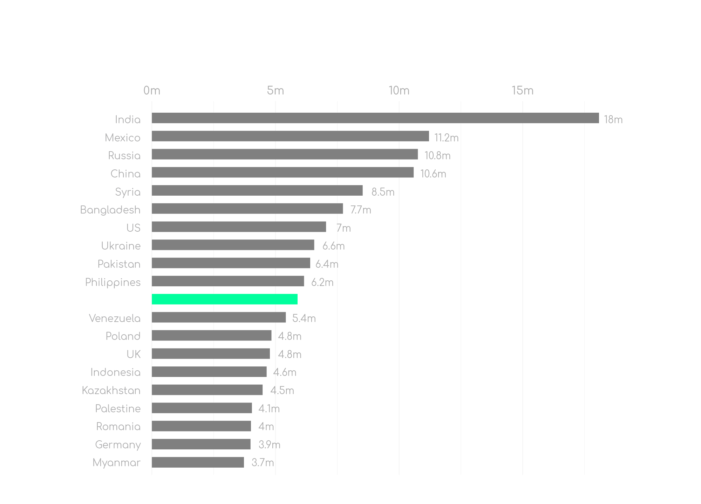
I also noticed that Afghanistan does not have any immigrants on its land, nor any interest in searching for Afghanistan as a preferred country to migrate to.
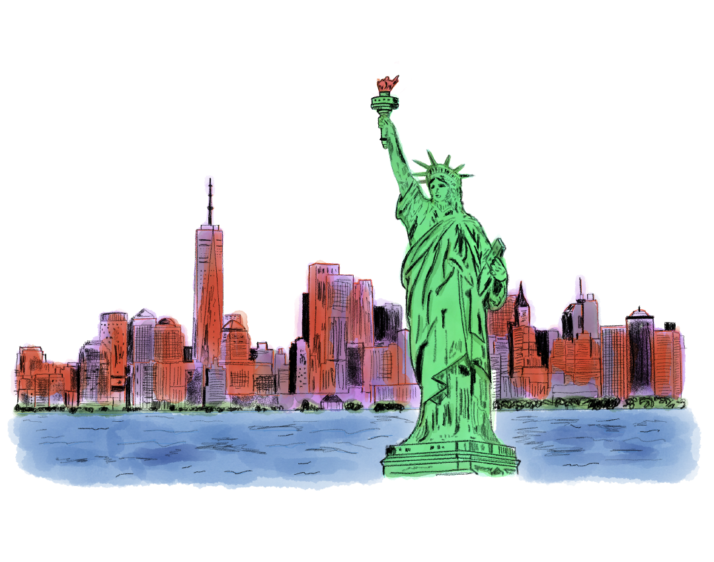
According to the International Organization for Migration (IOM), the United States has about 47 million immigrants inside the United States, coming from 21 countries. About a third of these numbers are from one country, Mexico. This represents 17% of the world's immigrants, which in the same year 2020 reached 281 million immigrants. And when looking at the number of immigrants leaving the United States, the total number did not exceed 6% compared to the total number of immigrants coming to it.
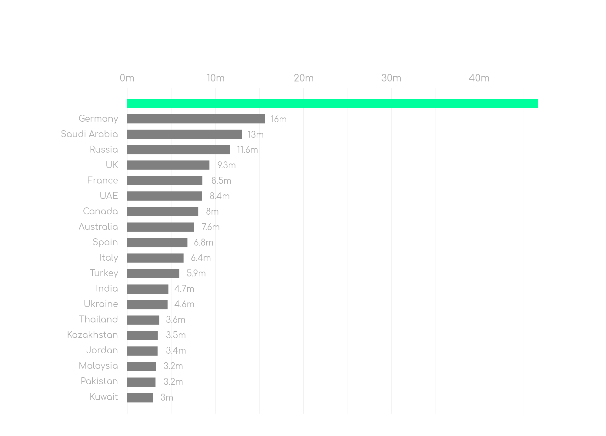
At a time when the flow of immigrants into the United States was the highest among all flows to or from the world countries, the search interest for immigration from the United States was also the highest relatively among all the search interest flows to or from the world countries. To reach nearly the same value as the flow of immigrants into the country.
And at a time when the number of countries in which Americans immigrated to between 2005 and 2020 is lower than 20 countries, the search interests reveal more than 70 different countries Americans are interested to immigrate to.
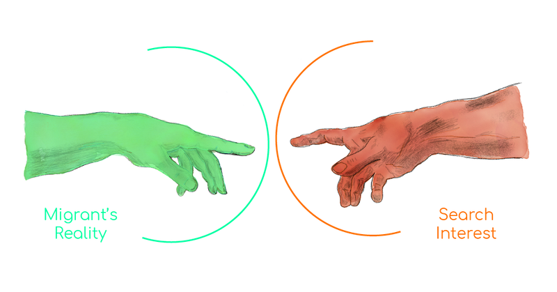
Today, more people than ever live in a country other than the one in which they were born. One out of every 30 people in the world is a migrant.
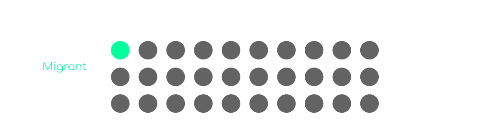
I started to collect the data of these two parallel worlds (migration reality vs. search interest). I had to scrape Google search interest data of world countries for the common time period between the two data sources which is between 2005 and 2020. I used five different forms for common migration queries such as: migrate to (country) or move to (country), etc. Then, to ease the task a little, I only collected the data of the top 100 countries in terms of the number of immigrants to them as per 2020. In order to get more accurate results, I used 10 different translations of the queries according to the ten most spoken languages in the world to have a better coverage on different regions.
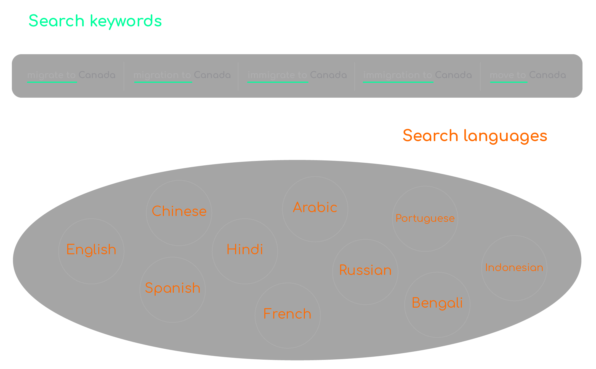
Before exploring and making comparisons, I had to normalize the data so I could compare them properly.
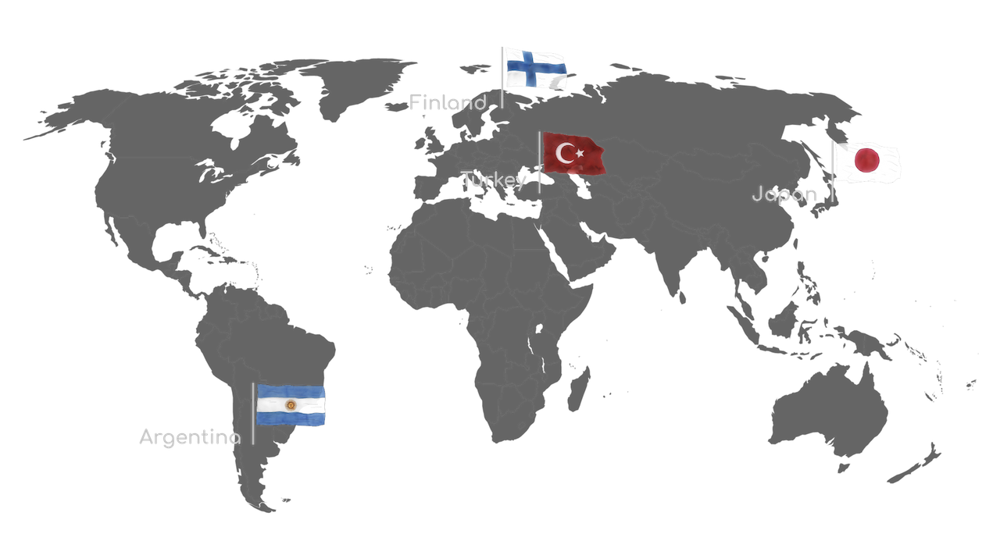
Let's explore four of the most desired countries in four different regions of the world. We can try to spot the differences between the reality of migration to or from these countries and the people's search interest to move to or from them. These selected countries are: Argentina (South America), Finland (Europe), Turkey (Middle East), Japan (East Asia).
The relative average values between migrant’s flow into the country and search interest are almost equal but the origins of both flows are different. Migrants mainly originated from Paraguay, Bolivia and Chile, while the search interest to move to Argentina are coming from Russia, Venezuela, US and Colombia.
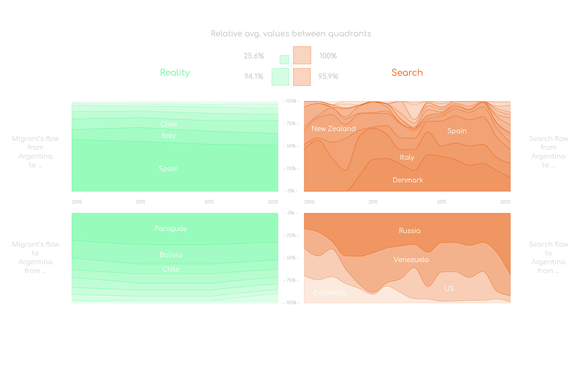
Our comparison has revealed a big gap between migrants who mainly come from two countries (Estonia and Sweden) and search interest to move to Finland which is 99 times higher, coming from 25 countries, topped by France, Russia and India.
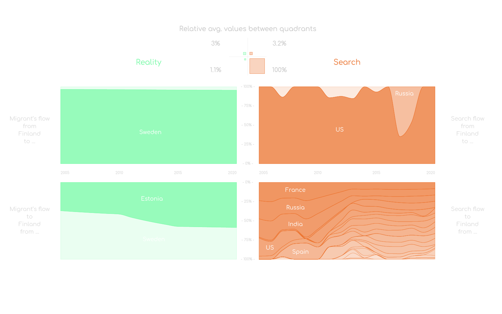
In the past few years, Turkey has become the main host for Syrian migrants fleeing the civil war in their country. During the same time period, there has been an increase of search interest in how to move to Turkey from Russia, the UK, and the U.S.
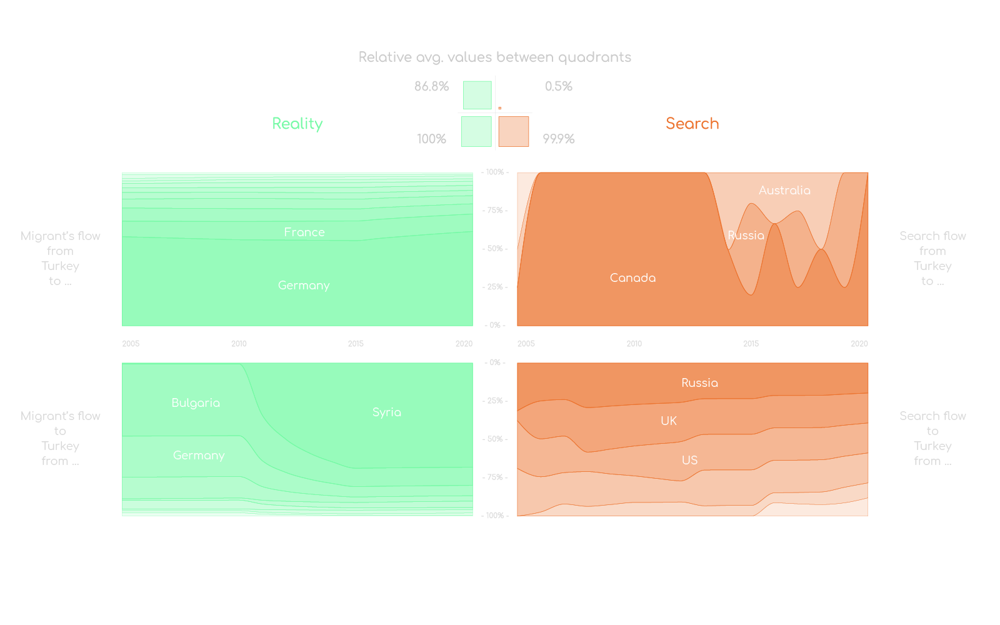
More than 80% of migrants to Japan come from China, South Korea, the Philippines, and Brazil. Search interest doesn't entirely match this pattern; there has been an increase in searches for how to migrate to Japan in places such as Hong Kong, the U.S., or Singapore.
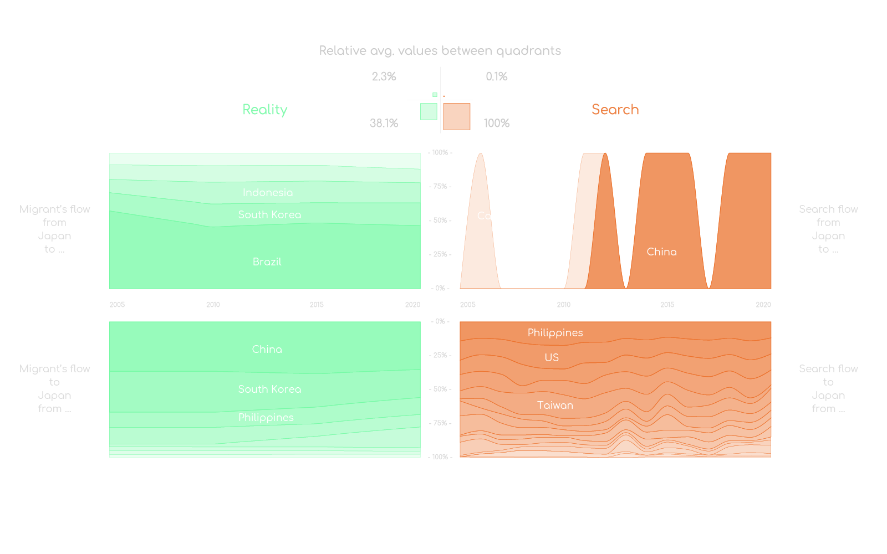
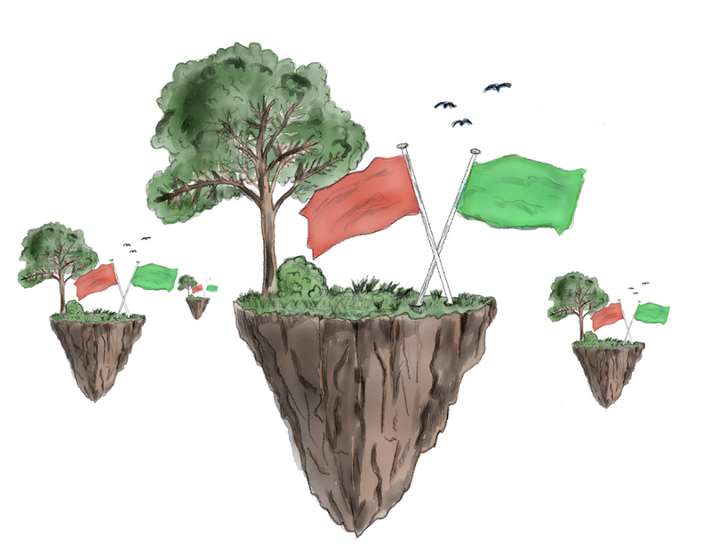
After this quick tour, you might be curious about exploring your own country. Perhaps you want to know where people migrate to, where migrants come from, and to what extent these patterns match search interests.
The default choice below is Egypt, the country where I was born and Live; the reason is that exploring data revealed insights that I wasn't expecting. For example, the interest to move from Egypt to its neighbor country from the west, Libya in 2013 because of the political turbulence that started in the same year. The thing that wasn’t captured by the actual migration data.
Explore your country or any other country you like to explore among 173 countries on the list.
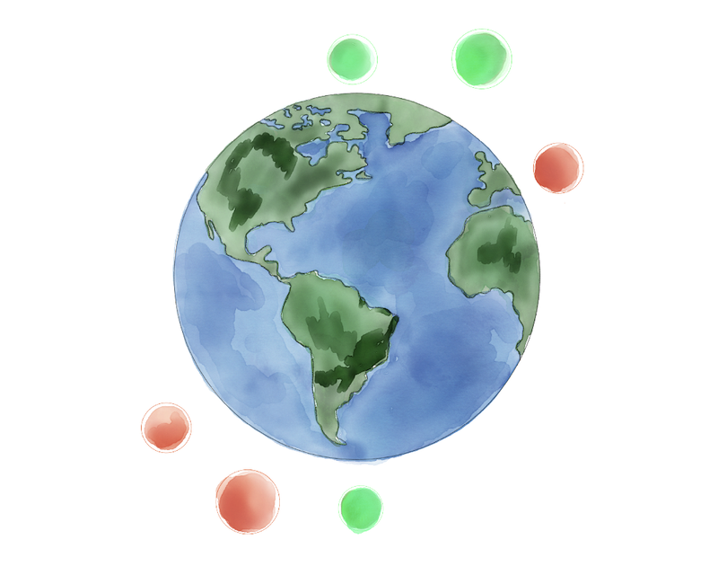
In order to draw this unified picture of two worlds, so it would be easier for me to compare them altogether (for all countries of the world together) and in detail (each country separately), I designed this interactive chart using the average values of the flows for the period between 2005 and 2020.
There are two maps inside the circle. The map on top represents the distribution of migrants and search interests to each country. The map at the bottom shows the distribution of migrants and research interests from each country.
The bars on the outer circle show the same data as the maps. Countries are arranged by continent and in alphabetical order. Bars oriented outwards of the circle represent flows out of each country. Bars oriented inwards represent the flows into the country.
I’ll leave you to fly by yourself, explore the data, and see the gap between the real world of actual migration and the virtual world drawn of interests and desires.